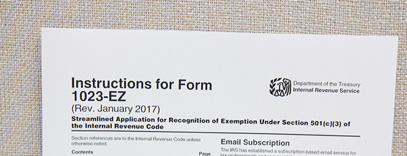

![Right Tax Service Logo]()
미국 시민권자를 위한 세금보고123123123
문제없이 안전하게! Right Tax Service
지금 해야 하는 까다로운 IRS 해외 금융 계좌 보고, 결과까지 책임지는 Right Tax Service가 안전합니다.
왜냐하면 보고하는 과정에서 생긴 개인 정보 노출문제, 한국과 미국의 세법 차이에서 발생되는 문제, 미국의 잦은 세법 변경으로 인한 문제, 제출 자료 누락 등 수많은 문제가 발생할 수 있기 때문입니다. 제대로 보고가 되지 않았을 때 형사 처벌 및 개인 금융 계좌의 최고 50%까지 벌금이 부과될 수 있습니다. 그뿐 아니라, 미국은 조세 시효가 없어 언제라도 과징 및 처벌당할 수 있기 때문에 세금문제로부터 결코 자유로울 수 없습니다. 이러한 사후 문제에 대해 원칙적으로 회계사에게는 아무런 법적 책임이 없기 때문에 많은 회계사들이 고객이 제공한 자료로만 적당히 해외 금융 계좌 보고 진행을 하고 있습니다. 하지만 Right Tax Service는 고객님의 안전한 해외 금융 계좌 보고를 위해 미국 세법뿐 아니라 한국 세법까지 정확하게 이해하고, 해외 금융 계좌 보고 과정 역시 철저하게 검토합니다. 이것이 해외 금융 계좌 보고 결과까지 직접 책임지고 보장해 드릴 수 있는 이유입니다.
01
미국 세금 신고는 미국 세법에 맞게 처음부터 끝까지 정확하게 정리해서 보고해야 합니다. 회계사는 고객의 자료를 보고 누락된 자료를 요청하여 보고해야 하는데, 고객이 제출한 자료만으로 보고를 해도 법적으로는 문제가 없기 때문에 대충 하는 경우가 많습니다. 하지만 저희는 고객님의 서류를 놓치지 않고 정확히 파악해서 필요한 서류를 보완해드립니다. Right Tax Service는 은행이 놓친 정보까지 찾아 서류를 제출할 정도로 정확한 세금 신고 보고를 하고 있습니다.
02
지금까지 단 한 번도 해외 금융 계좌 보고를 하지 않았더라도 자진 신고 간소화 절차 (Streamlined Procedures)를 통해 IRS에 납부해야 할 벌금 및 형사 처벌을 면제 받을 수 있습니다. 지난 6년간의 해외 금융 계좌 보고 자료를 일반인이 직접 준비하기에는 간단한 일이 아니며, 한국의 세금 정책과 미국 세법을 정확히 알고 있는 회계사가 필요합니다. 미국의 해외 금융 계좌 보고 시스템은 매우 복잡한 절차를 가지고 있으며 분야도 다양하기 때문에 회계사 역시 각각의 전문 분야를 가집니다.
Right Tax Service는 해외 거주자를 위한 Streamlined Procedures가 처음 나왔을 때부터 이 분야만 전문적으로 해왔던 회계사라 이 프로그램에 전문화되어 있으며, 경험도 풍부합니다. Streamlined Procedures는 Right Tax Service가 가장 정확하고 확실합니다.

자진 신고 간소화 절차란? (Streamlined Filing Compliance Procedures)
이 프로그램은 과도한 처분과 벌금을 줄이고 자발적인 신고를 이끌어내기 위해 미국 국세청(IRS)에서 한시적으로 진행하고 있는 프로그램으로 그동안 한 번도 해외 금융 계좌 보고를 하지 않았더라도, 이제라도 해외 금융 계좌 보고를 하면 IRS에 납부해야 할 벌금 및 형사처벌을 면제 받을 수 있습니다.
국제법 사이에서 길을 잃은 고객을 불이익과 두려움으로부터 보호한다
미국에 이민 온 지 15년째 되지만 ‘한국에 남아있는 은행 잔고가 일만불 이상이면 FBAR 신고를 해야 한다’ 는 사항에 대하여 자세히 몰랐던 저는 지금까지 간단한 Tax return 신고만 하고 있었습니다. 그런데 어느 날 인터넷에 텍스신고에 대하여 알아보다가 강마크 회계사님의 ‘FBAR와 Streamlined Procedures에 대한 기사’를 읽고 의뢰를 하게 되었습니다. 지난 기간 동안 보고되지 않았던 은행 잔고 자료와 Tax Return 자료를 꼼꼼하게 처리해 주시는 모습에 정말 안도의 숨을 쉴 수 있게 되었습니다.. 제가 궁금하여 묻는 모든 질문에 성실하게 답변 해 주시고, 모든 서류 준비가 진행되는 동안의 과정을 자세히 알려 주셔서 더욱 안심할 수 있었습니다. 언제든지 열린 마음으로 모든 궁금함을 해결해 주신 강마크 회계사님께 심심한 감사의 말씀을 드립니다.
혹 미국에 와서 처음 세금보고를 해야하는데 어떻게 할까 고민하다가 겨우 웹사이트를 하나 찾았는데 사무실이 사는 곳이랑 너무 멀고 찾아갈 시간도 못낼 형편인데 뭘 믿고 수임료를 미리내고 일을 맡겨야 하나 하고 고민하는 분이 있다면 걱정하지 마시고 일단 믿고 맡겨도 된다고 말해드리고 싶어요. 제가 딱 그랬어요. 유투브 검색으로 해외자산보고를 해야한다는 건 알았고 아무리 연구해도 이건 혼자서 할 수 없는 것 같고 웹사이트엔 올린 칼럼을 읽어보면 요점 정리를 깔끔하게 쉽게 이해가 되게 쓴 것 맞는 데…일을 아는 사람인 것 같은데…도대체 믿을 수 있을까?? 일단 주변에서 만나볼 수 있는 회계사에게 일을 맡기는게 좋지 않을까?? 해서 롯데마트나 H마트에서 가져온 전단지에 있는 회계사에게 전화했더니 가져오라는 서류가 집주소랑 수표????고민이 좀 되었죠. 이것보다는 자료가 많은데…해외자산보고를 해야 한다고 했는데…그래도 약속을 정하고 갈려고 맘을 먹었어요. 만나서 얘길 해보면 더 필요한 자료를 말해주겠지 하고. 그러던 차에 Right Tax에서 카카오톡으로 문자가 와서 제 고민을 적었더니 바로 마크 강 회계사님이 전화를 해주셨어요. 제 고민을 얘기 했죠. 한 번도 본적도 없는 분에게 제 개인 정보를 맡겨야하고 미리 수임료를 내야하는 부담감에 대해서. 강회계사님이 흔쾌히 수임료는 일은 끝내고 주셔도 된다고. 한번 믿고 맡겨달라고. 많은 고객들이 한번도 사무실에 찾아오지 않고도 일을 맡기고 있다고. 제 고민은 충분히 이해가 된다고. 정말로 회계사이고 과기대 출신이 미국와서 공부하다가 회계사가 됐고 일을 한지는 2015부터라고. 절대고 후회하지않게 해주겠다고 말씀해주시는데 왠지 믿음이 갔어요. 따져놓고 보면 전 정말 작은 고객이잖아요?? 무시해도 되는 사실 수임료도 얼마 되지 않는 잔챙이인데, 바로 전화해주시고 자세히 설명해주셨어요. 한 사람의 고객도 소중하게 생각하는 태도가 맘에 들었어요. 얘기를 나눠보니 믿을 수 있겠다 싶었고 정말 꼼꼼히 제가 빠뜨린 것도 잘 해주실 것 같았어요. 한국분이라 한국 은행자료를 번역해서 보내지 않아도 되고 카톡으로 궁금한 점이 있어서 물어보면 바로 연락이 되고 미국 회계사는 해 줄 수없는 서비스를 강회계사님을 무료로 제공해주고 단지 세금보고에 관한 수임료만 청구하셨어요. 사실 제가 처음 하는 거라 빠진 자료가 많았어요. 꼼꼼하게 제가 빠뜨린 자료를 다 요청하셔서 제가 잘 찾아서 보내드릴 수 있었어요. 결국 세금보고는 회계사가 해도 책임은 결국 제가 져야하는 거라 사실 걱정이 많이 되었거든요. 어떤 곳은 보내준 자료만 가지고 연말정산을 해서 나중에 시민권 신청을 할 때 문제가 되거나 벌금을 물거나 한다는 얘기를 많이 들었거든요. 요청하신 자료를 다 보내고 2주만에 연말정산 최종 보고서를 받았어요. 사실 봐도 왜 이런 숫자가 왜 여기에 젹혀있는지 알수는 없었어요. 단지 제가 확인한 건 은행 계좌 번호랑 보험 증서번호정도예요. 강 회계사님이랑 같이 일하시는 분들이 모두 정말 열심히 잘 챙겨주셨어요. 서류 준비를 도와주신 분과 정말 제 서류를 가지고 세금 보고서를 만드신분과 최종적으로 검토하신 강회계사님, 팀원들의 팀웍이 물흐르듯 자연스러웠어요. 깔끔한 일처리가 맘에 들어서 앞으로도 계속 이용할 생각입니다. 처음이라 믿을 수 있을까 고민하시는 분이 계시면 도움이 될까 싶어 장황하게 적어봤어요. 괜찮아요. 믿어도 돼요~ ^^